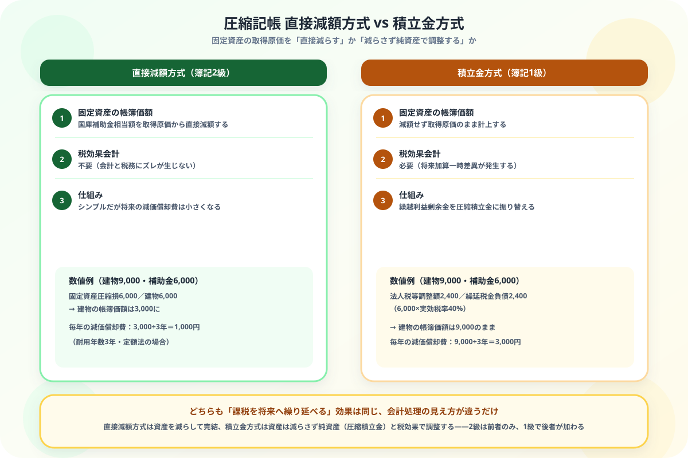

圧縮記帳の直接減額方式と積立金方式の違いがわからない人へ
「課税の繰延べ」から整理する図解ガイド
- 圧縮記帳とは「課税の繰延べ」——免税ではなく、税金を払うタイミングを先送りする仕組み
- 本質の違いは固定資産の帳簿価額の扱い——直接減額方式は取得原価から差し引く、積立金方式は減額しない
- 簿記2級は直接減額方式のみ——積立金方式は簿記1級で税効果会計とセットで登場する
- どちらも課税を繰り延べる効果は同じ——会計処理の見え方が違うだけ
こんにちは、大谷です！
「圧縮記帳」という言葉を初めて見たとき、「圧縮って何を圧縮するの？ 記帳の仕方が特殊なの？」と、名前からしてまったくイメージが湧きませんでした。しかも1級のテキストには「直接減額方式」「積立金方式」という2つの方法まで出てきて、「うわっ、また2つも覚えるのか……」と身構えたのを覚えています。
でも実は、圧縮記帳の目的はシンプルです。「もらった補助金にかかる税金を、今すぐじゃなく将来に先送りする」——ただそれだけ。2つの方法は、この先送りをどう帳簿に表現するかの違いにすぎません。今日は一緒に整理していきましょう！
また、記事の末尾のほうにある【いいねボタン】をポチッと押してもらえると、めちゃくちゃ嬉しいです！
❓ 固定資産の帳簿価額の扱いの違い——「直接減らすか」「減らさないか」
直接減額方式と積立金方式は、どちらも国庫補助金などを受け取った際に生じる課税を将来へ繰り延べる方法ですが、固定資産の帳簿価額の扱いが正反対です。

📝 ① 直接減額方式の仕訳——簿記2級の基本
建物9,000円を現金で取得した。取得にあたり国庫補助金6,000円を現金で受け入れており、直接減額方式による圧縮記帳を行う。耐用年数3年、定額法、残存価額ゼロ。
| タイミング | 借方 | 金額 | 貸方 | 金額 |
|---|---|---|---|---|
| 補助金受入時 | 現金預金 | 6,000 | 国庫補助金受贈益 | 6,000 |
| 建物取得時 | 建物 | 9,000 | 現金預金 | 9,000 |
| 圧縮記帳（直接減額） | 固定資産圧縮損 | 6,000 | 建物 | 6,000 |
💰 ② 積立金方式の仕訳——簿記1級で追加される方法
同じ条件（建物9,000円、補助金6,000円、耐用年数3年、定額法）で、積立金方式による圧縮記帳を行う。法定実効税率は40%とする。
| タイミング | 借方 | 金額 | 貸方 | 金額 |
|---|---|---|---|---|
| 補助金受入時 | 現金預金 | 6,000 | 国庫補助金受贈益 | 6,000 |
| 建物取得時 | 建物 | 9,000 | 現金預金 | 9,000 |
| 圧縮記帳（積立金方式） | 仕訳なし（固定資産圧縮損を計上しない） | |||
| 税効果会計の適用 | 法人税等調整額 | 2,400 | 繰延税金負債 | 2,400 |
| 圧縮積立金への振替 | 繰越利益剰余金 | 3,600 | 圧縮積立金 | 3,600 |
過大に計上された利益（6,000円の受贈益－2,400円の税効果＝3,600円）を、繰越利益剰余金から圧縮積立金（純資産）へ振り替えます。これが積立金方式の最大の特徴で、直接減額方式にはないステップです。
🔍 ③ 見分け方の早見表
| 項目 | 直接減額方式 | 積立金方式 |
|---|---|---|
| 固定資産の帳簿価額 | 補助金相当額を減額 | 取得原価のまま |
| 税効果会計 | 不要 | 必要（将来加算一時差異） |
| 純資産への影響 | なし | 圧縮積立金への振り替えあり |
| 出題範囲 | 簿記2級 | 簿記1級 |
📋 まとめ：直接減額方式 vs 積立金方式 早見表
「固定資産を減らすか、減らさないか」——この1点で2つの方式はもう混同しません
名前も難しく感じる圧縮記帳ですが、「課税の繰延べ」という目的から逆算すれば、2つの方法の違いはシンプルに整理できます。この記事が「あ、そういうことか！」につながったら、僕の執筆のモチベーション維持のために、この下にある【いいねボタン】をポチッと押してもらえると、めちゃくちゃ嬉しいです！
Study Questで今日の学習時間を記録して、簿記1級合格への一歩を刻んでおきましょう。